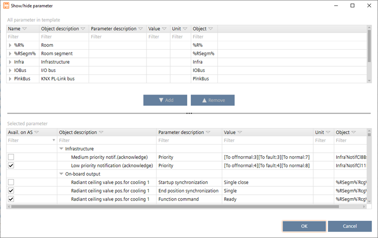

显示/hide参数（对话框）
这Show/hide parameter对话框中添加或删除参数Default values桌子。
Configuring default values (template)

Upper table
上表显示可为应用程序模板选择的所有对象。
柱子 | 描述 |
|---|---|
姓名 | 显示可为应用程序模板选择的所有参数。 |
对象描述 | 显示对象的详细描述。 |
添加 | 将选定的参数添加到选择列表（下部窗格）。 |
消除 | 从选择列表（下部窗格）中删除选定的参数。 |
Lower table
下表显示当前选择的参数。

柱子 | 描述 |
|---|---|
Avail. on AS | 如果选择，参数值可见并且可以在 ABT 站点中更改。 |
对象描述 | 对象描述 |
参数说明 | 参数说明 |
价值 | 参数值 |
单元 | 参数单位 |
目的 | 对象名称 |
您只能在 ABT 站点中查看和更改参数值，如果Avail. on AS选中所选参数的复选框。这Avail. on AS复选框设置在Configuration > Default values.
Configuring default values (template)
如果选择，相应的对象参数将在以下区域中可用：
- Device details > Instance parameter page
- Application template details > Instance parameter tab
- Building > Device list > Load instance parameter
- Checkout report